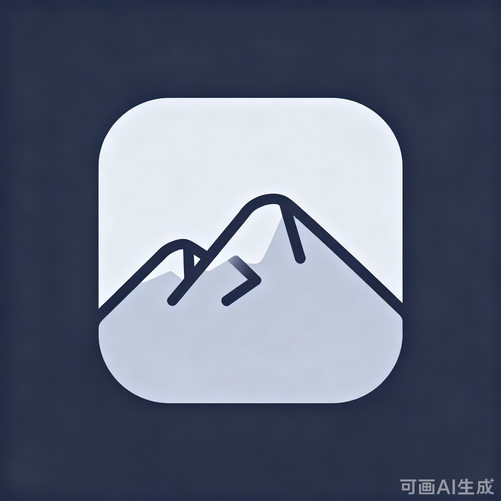
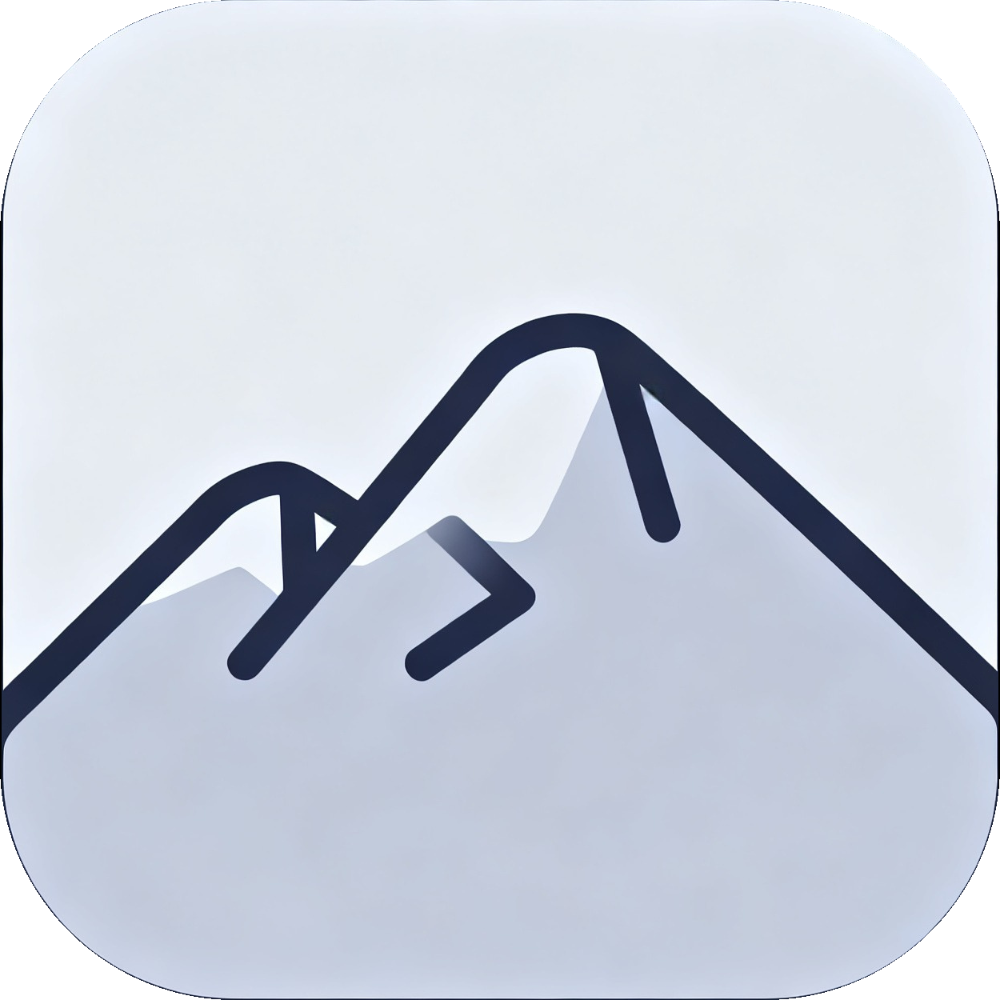

行程名称
东京五日游
本稿只做设计定稿，不含代码。新建行程页已按你的选择定为方案 A · 预览驱动；本轮新增任务 5 · 添加安排页重设计待你审批。青山 Logo 还差你手上那张去黑边的实图。全部定稿后我一次性施工，编译 APK 并提交 git。
trip_edit_screen.dart 是「6 张 SectionCard 等权竖排 + 尾部 PrimaryButton」，
在 390×844 屏上需要滚动约 1.9 屏才能碰到「创建行程」。方案 A 为纯前端重排，
不新增数据库列、不新增依赖、不触碰 schema 与同步链路，编辑模式（initialId != null）沿用同一套布局。
| 方案 | 形态 | 操作步数 |
|---|---|---|
| A推荐 | 预览驱动单屏：顶部实时预览卡，下方紧凑设置 | 最少 |
| B | 三步引导：去哪儿 → 什么时候 → 长什么样 | +2 步 |
| C | 极简单屏：一张主卡 + 折叠「更多设置」 | 最少但要展开 |
HeroPreview 高 150、圆角 24，直接复用 CoverGradients 与 onCover。InputDecoration 描边，用 34px 图标底片做视觉锚点。TextField。成都-稻城。Spacing.xs(4) + 66 + Spacing.sm(8) = 78（再加安全区 inset）。
而停靠条当前用的是全局 FAB 令牌 AppBottomLayout.actionButtonOffset = 80，
两者相差 2px；再叠加停靠条自身的描边与阴影，视觉上就是一条「悬空缝」。
停靠条浮在胶囊栏上方，两者之间有一道可见的暗缝，且停靠条自带的 outlineVariant 描边让它更像一块「贴在上面但没连上」的独立卡片。
停靠条底边与胶囊栏顶边严格接合：把停靠条下圆角改成 0、去掉下描边与外阴影，两者在视觉上拼成一个整体的「上方分段 + 下方导航」双段结构。
| 位置 | 现在 | 改为 |
|---|---|---|
tokens.dart · AppBottomLayout |
只有 actionButtonOffset = 80（给 FAB 用） |
新增 navBarHeight = 78 —— 与 FloatingCapsuleNavBar 内部尺寸严格对齐的单一真值 |
trip_detail_screen.dart · _DetailDock 摆位 |
withSafeArea(actionButtonOffset) |
withSafeArea(navBarHeight) —— 底边与胶囊栏顶边接合 |
_DetailDock 自身样式 |
四角 18 圆角 + 全描边 + 默认阴影 | 下两角改 0、去掉下描边，成为「上半段」 |
segmentDockHeight |
62（估算值） | 按 _DetailDock 实测高重算（5×2 + 9×2 + 12.5行高 ≈ 46，留 10 间隙）→ 56 |
| 时间线 / 攻略两视图末尾留白 | 均用 dockedContentTail |
不变（dockedContentTail 自动跟随 segmentDockHeight 重算） |
| FAB「添加安排」 | actionButtonOffset + segmentDockHeight + md |
改为基于 navBarHeight + segmentDockHeight，位置基本不变 |
navBarHeight 只服务「停靠类页面」，改动面收敛在行程详情一处。
KitTab → KitPanel（城市锦囊）。
当行程目的地没有命中种子城时，整屏只剩一张空态卡「该目的地暂无锦囊」，用户点进来什么也拿不到。
死路。用户切到「攻略」的意图是「看看这个地方有什么」，空态把这条路堵了。
同一个视图，有锦囊给锦囊，没锦囊给城市攻略摘要——绝不出现死路。
| 档次 | 做法 | 改动面 |
|---|---|---|
| ① 轻量推荐 | 只改 KitPanel 的空态分支：把 _KitEmpty 换成「城市攻略摘要块」= GuideCityHero 精简版（城市名 + 统计行）+ GuideSectionGrid 六栏宫格。点任一格 → 进 TripGuideScreen 并定位该栏。 |
1 个文件（kit_panel.dart），数据全部复用现有 guide provider，零新增链路 |
| ② 完整 | 把 TripGuideScreen 的 body 抽成独立可复用组件 GuideBody，锦囊空时直接内嵌整页攻略正文（含在线游记流）。 |
组件下沉（新文件 + 改 trip_guide_screen.dart），回归面较大 |
matchCityKey(trip.destination, nameMap) 取命中城 →
命中且种子四栏有内容 ⇒ 渲染锦囊；命中但种子内容为空、或未命中 ⇒ 回落城市攻略摘要。
注意与既有红线一致：不引入任何在线 POI / 地图 / 外部接口，摘要块只吃本地种子与缓存。
D:\CBJ\下载\未命名的设计.png（2048²，带深蓝外底 #252C48，即你说的「黑边」），
并没有第二张已去黑边的文件 —— 全盘扫了 C:\ / D:\，也翻遍了你的下载、桌面、图片、文档目录。
所以我直接动手把黑边裁掉了，成品见下方。如果你手上那版和我裁的不一样（改过构图或颜色），把它发我，我按你的实图替换。


rgb(37,44,72)，沿中心行 / 中心列向内扫描，找到圆角方形本体的精确边界：left 401 · top 400 · right 1646 · bottom 1649；design/assets/：mountain_logo_transparent_2048.png（主用）、mountain_logo_body_2048.png（不透明圆角方形）。施工时我会按 Android 各 dpi 与 PWA 尺寸从这张透明版派生。判定依据有三条，互相印证：
8月28日 14:35，项目里 ic_launcher.png 生成于 15:01，相隔 26 分钟 —— 就是从这张图裁的；web/logo.png 与 android/.../mipmap-xxxhdpi/ic_launcher.png 的 MD5 完全相同（0a56ec0a…），都是裁掉深蓝外底、只留圆角方形本体的版本；assets/img/logo.png（蓝金圆角方块）完全不是一套设计。也就是说 —— 这张图已经在给 Android 当桌面图标了，你要的是把同一个 Logo 也用到开屏页与关于页，让三处统一。
不是图片，是 _BoatStroke 代码绘制的舟形，画在 primary→tertiary 渐变圆里（带描边生长动画 + 光环扩散）。
青山图标按 96 × 96、圆角 26 直接呈现，光环扩散保留、舟形笔触动画移除。文字位置与字号完全不动，保证开屏节奏不变。
关于页现在是 AssetImage('assets/img/logo.png') + 圆形容器裁切。换成青山后仍走圆形裁切，只需替换资源文件与显示尺寸。
母版带深蓝外底，直接放上去是「深蓝方块垫在浅绿背景」。两种处理方式：
| 口径 | 做法 | 观感 |
|---|---|---|
| ① 裁掉外底推荐 | 裁出母版中央的圆角方形本体（约 1255 × 1255），其余留白/透明。开屏页与关于页都用这个本体。 | 干净，与浅绿背景融合 |
| ② 保留整图 | 直接按 2048 整图缩放使用，深蓝外底保留。 | 厚重，但方底方框会压住浅绿背景 |
三处 Logo 之外，仓库里还有几份同一张图的副本，一并核对是否统一样式：
| 文件 | 现状 |
|---|---|
assets/img/logo.png | 256×256 · 旧蓝金方块 → 本次替换 |
web/logo.png | 192×192 · 已是青山（= ic_launcher） |
website/assets/logo.png | 2492×2500 · 第三套设计，需你确认是否统一 |
web/favicon.png | 16×16 · 偏小，建议从母版重出一张 32/64 |
item_edit_screen.dart（601 行）是「8 张 SectionCard 竖排」——
类型 / 名称+地址 / POI 搜索 / 安排日期 /（交通）出发地+到达地+航班号 / 开始时间+时长 / 费用 / 备注 / 保存按钮。
最长的交通类型要滚动约 2 屏。设计语言与新建行程页保持同族：聚焦录入 + 实时摘要 + 停靠保存。
MiniStepper 每按一次 ±15 分钟，想设 2 小时要点 8 次。| 主线 | 做法 |
|---|---|
| 合并 | 「地址」+「POI 搜索」合成一个「名称 → 自动建议 → 一键填地址」的流；日期/时间/时长合成一段「什么时候」。 |
| 摘要 | 时间段顶部实时算出一行 09:00 → 10:30 · 共 1.5 小时，改哪个格子这行都跟着变。 |
| 点选 | 时长改为 30分 / 1时 / 1.5时 / 2时 / 3时 / 自定义 六个 chip，常用值一次点按搞定。 |
| 停靠 | 「保存安排」钉在底部；编辑模式左侧多一个「删除」。 |
_onPoiChanged 防抖搜索与 _poiResults，只是把结果从「独立一张卡」挪到名称输入框正下方变成内联建议。地图选点本来就没实现（文件头注释里的「地图选点」是过期描述），本次一并清掉。| 原来 | 改成 |
|---|---|
| 类型（整卡 5 等宽格） | 紧凑横滑 chip 条（--tc 带类型色），高度从 ~76 压到 40 |
| 名称卡 + 地址卡 + POI 搜索卡（3 张） | 合并为 1 张「安排内容」：名称大字输入 → 下方内联 POI 建议 → 地址显示为一行次要文本 |
| 安排日期卡 + 开始时间 / 时长卡（2 张） | 合并为 1 段「什么时候」：Day chip + 时间摘要行 + 时长 chips |
时长 MiniStepper ±15 | 六个时长 chip + 「自定义」保留原步进 |
费用卡（带 LabeledField） | 压成一行：¥ + 金额 + 币种胶囊 |
| 保存按钮在滚动末尾 | 停靠底部；编辑模式左加「删除」 |
prefillNew = true），顶部出现一条提示说来源，用户只需确认时间就能保存。fromName/fromAddr/fromLat/fromLng 与 toName/toAddr/toLat/toLng 的录入位置重新组织。flightNo 与 _flightInfo 逻辑原样保留。我默认给的是 30分 / 1时 / 1.5时 / 2时 / 3时 / 自定义。如果你更常设半天或全天，可以换成 1时 / 2时 / 半天 / 全天 / 自定义。
连续录多段交通时（厦门 → 鼓浪屿 → 回程），一键把上一条的到达地填成本条出发地。不加也不影响主流程，说一声即可。
| 序 | 改动 | 涉及文件 | 验收 |
|---|---|---|---|
| 1 | 青山 Logo 替换（开屏 + 关于） ✅ 去黑边版已裁好 |
母版 D:\CBJ\下载\未命名的设计.png → 已裁出透明底圆角方形（design/assets/mountain_logo_transparent_2048.png）→ 派生各 dpi 入库 assets/img/；改 splash_screen.dart、about_screen.dart |
两页真机截图无变形 |
| 2 | 停靠条贴紧底栏 | tokens.dart（新增 navBarHeight）、trip_detail_screen.dart（_DetailDock 摆位与样式） |
停靠条底边与胶囊栏顶边 0 缝；时间线 / 攻略两视图末尾不遮挡 |
| 3 | 攻略视图回落城市攻略 | kit_panel.dart（空态分支）+ 可能的 guide_widgets.dart 复用 |
构造一个未命中城的目的地，切到「攻略」能看到六栏摘要 |
| 4 | 新建行程页重设计（方案 A · 预览驱动） | trip_edit_screen.dart（布局重排：Hero 预览 + 行内输入 + 外观合并 + 日期快捷 + 停靠按钮）、trip_widgets.dart（如有新组件） |
新建 / 编辑两种模式都能正常保存；桌面工作台 Dialog 复用不受影响 |
| 5 | 添加安排页重设计 | item_edit_screen.dart（8 卡 → 4 卡：类型条 / 安排内容+时间摘要 / 费用行 / 备注折叠 + 停靠保存；交通类型走两段行程） |
五种类型都能保存；POI 建议仍能选中回填；航班查询结果正常显示；编辑模式删除可用 |
| 6 | 版本号递增 | pubspec.yaml → 2.8.3+2835、app_meta.dart → v2.8.3.5 |
关于页显示 v2.8.3.5 |
| 7 | 门禁 + 编译 + 提交 | flutter analyze / flutter test / flutter build apk / git commit |
analyze 0 error；test 全绿；APK 产出并记 sha256 |
SharedTrips 镜像ledger_access / trip_access）AppIcons / Icons.*_rounded）blur: true 调用点（底栏仍是唯一）